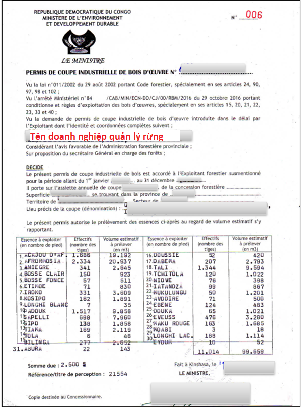
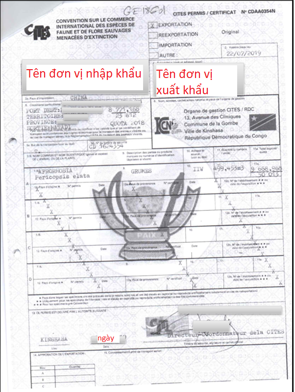
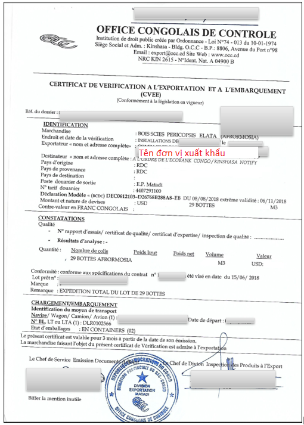
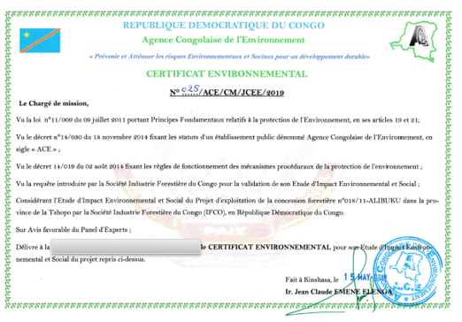

Implementing Timber Leglity Assurance Systems
A guide to comply with timber legality requirements in Cameroon and to support due diligence

DRC

Quy định gỗ hợp pháp của Cộng hòa Dân chủ Công-gô
ộng hòa Dân chủ Công-gô đang đàm phán Hiệp định Đối tác Tự nguyện với Liên minh Châu u. Một Hệ thống bảo đảm tính hợp pháp của gỗ đang được phát triển ở quốc gia này. Nó đảm bảo các sản phẩm gỗ tuân thủ luật pháp quốc gia và giúp ngăn chặn việc nhập khẩu gỗ bất hợp pháp vào các quốc gia khác. Hệ thống này phụ thuộc vào việc chính phủ phát triển hệ thống kiểm soát và xác minh hiệu quả và các nhà điều hành tuân thủ các quy định pháp luật và tiến hành trách nhiệm giải trình. Bằng cách nhận thức được các quy định pháp luật ở Cộng hòa Dân chủ Công-gô được nêu rõ dưới đây, các cơ quan thực thi pháp luật và các nhà nhập khẩu có thể thực hiện các biện pháp kiểm soát để thúc đẩy gỗ được khai thác, vận chuyển và buôn bán hợp pháp từ Cộng hòa Dân chủ Công-gô. Các nhà nhập khẩu và cơ quan xác minh có thể tham khảo hoặc sử dụng thông tin này trong việc thực hiện trách nhiệm giải trình.
Gợi ý xây dựng và thực hiện trách nhiệm giải trình cho các nhà nhập khẩu
Trách nhiệm giải trình là gì?

Phát triển các hệ thống trách nhiệm giải trình
Thực hiện trách nhiệm giải trình
Các tài liệu sau đây được chọn theo định nghĩa gỗ hợp pháp của Cộng hòa Dân chủ Công-gô và/ hoặc các quy định pháp luật trong các giai đoạn khác nhau của chuỗi cung ứng.
Hợp đồng nhượng quyền rừng

Hợp đồng nhượng quyền rừng phải do Bộ trưởng Bộ Môi trường và phát triển bền vững và đại diện Công ty nhận nhượng quyền rừng có diện tích trên 300.000 ha ký và đóng dấu. Cần kiểm tra chữ ký, con dấu của Bộ Môi trường và Phát triển bền vững và công ty nhận nhường quyền, tên doanh nghiệp, thời hạn hiệu lực trên hợp đồng.
Nghị định nhượng quyền rừng lâu dài cho cộng đồng địa phương
Nghị định nhượng quyền rừng lâu dài cho cộng đồng địa phương phải do Bộ trưởng Bộ Môi trường và phát triển bền vững ký và đóng dấu. Cần kiểm tra chữ ký, con dấu của Bộ Môi trường và Phát triển bền vững, quy mô diện tích nhượng quyền trên nghị định bộ trưởng.
Giấy phép khai thác công nghiệp
Giấy phép khai thác công nghiệp áp dụng cho khu vực khai thác hàng năm phải do Bộ trưởng Bộ Môi trường và phát triển bền vững ký, đóng dấu. Cần kiểm tra ngày ký, chữ ký, con dấu của Bộ trưởng, tên chủ sở hữu nhượng quyền, diện tích, khối lượng và loài khai thác.
Kế hoạch quản lý tạm thời
Kế hoạch quản lý tạm thời phải do công ty nhận nhượng quyền nắm giữ. Cần kiểm tra thời hạn nhượng quyền dưới 4 năm, khu vực khai thác trên kế hoạch này.
Tài liệu hoàn thành kiểm kê rừng
Tài liệu phải do công ty nhận nhượng quyền lưu trữ, gồm Kế hoạch khảo sát kiểm kê quản lý, Thông báo chấp nhận kế hoạch khảo sát, Chứng thực phù hợp với kế hoạch khảo sát kiểm kê quản lý, Báo cáo đánh giá kế hoạch khảo sát kiểm kê quản lý tạm thời. Cần kiểm tra chữ ký, con dấu của Bộ Môi trường và Phát triển bền vững, thời hạn trên các tài liệu.
Nghiên cứu kinh tế xã hội
Nghiên cứu kinh tế xã hội áp dụng cho nhượng quyền rừng công nghiệp. Cần kiểm tra chữ ký, con dấu của người nhận nhượng quyền, công ty lâm nghiệp trên tài liệu nghiên cứu.
Phê duyệt Kế hoạch quản lý
Kế hoạch quản lý của Công ty nhận nhượng quyền được phê duyệt bằng một Nghị định cấp tỉnh. Cần kiểm tra chữ ký, con dấu của Bộ trưởng Bộ Môi trường và phát triển bền vững cấp tỉnh, thời gian hiệu lực, diện tích và khối lượng, số cây, loài khai thác trên kế hoạch quản lý.
Thông báo chấp nhận Chương trình quản lý 5 năm
Thông báo chấp nhận chương trình quản lý 5 năm phải do Bộ trưởng Bộ Môi trường và phát triển bền vững ký đóng dấu. Cần kiểm tra chữ ký, con dấu của Bộ trưởng, thời hạn, diện tích khai thác.
Thỏa thuận cộng đồng địa phương
Thỏa thuận cộng đồng địa phương phải do đại diện Bộ Môi trường và phát triển bền vững, công ty nhận nhượng quyền, người dân bản địa ký, đóng dấu. Cần kiểm tra chữ ký, con dấu của các bên tham gia, thời gian ký thỏa thuận trước các hoạt động quản lý và khai thác.
Biên bản họp của Ủy ban quản lý và giám sát
Biên bản họp của Ủy ban quản lý và giám sát phải do đại diện Bộ Môi trường và phát triển bền vững, công ty nhận nhượng quyền, người dân bản địa ký, đóng dấu. Cần kiểm tra chữ ký, con dấu, thời gian ký biên bản.
Giấy phép CITES
Giấy phép CITES phải do Bộ Môi trường và phát triển bền vững ký, đóng dấu, cấp cho nhà xuất khẩu các loài gỗ CITES. Cần kiểm tra tính hợp lệ, chữ ký và con dấu, tên của chủ gỗ, loài và khối lượng trên giấy phép.
Thông báo số đăng ký thuế
Thông báo số đăng ký thuế phải do Cục trưởng Cục Thuế, Bộ Tài chính ký, đóng dấu. Cần kiểm tra số đăng ký thuế với tài liệu giao dịch, ký tên, đóng dấu người có thẩm quyền.
Giấy xác nhận thanh toán của Ngân hàng
Giấy xác nhận thanh toán của Ngân hàng phải do Ngân hàng ký, đóng dấu phát hành. Cần kiểm tra số tiền phù hợp trên giấy ghi nợ thuế, thời hạn thanh toán, chữ ký và con dấu của ngân hàng.
Báo cáo lô gỗ xuất khẩu
Báo cáo lô gỗ xuất khẩu được Văn phòng Kiểm soát ký, đóng dấu cấp cho nhà xuất khẩu gỗ. Cần kiểm tra chữ ký, con dấu của Văn phòng Kiểm soát, ngày ký, cần đối chiếu loại sản phẩm, khối lượng với thực tế.
Giấy chứng nhận xác minh vận đơn và xuất khẩu
Giấy chứng nhận xác minh vận đơn và xuất khẩu phải do Văn phòng Kiểm soát ký, đóng dấu cấp cho nhà xuất khẩu gỗ. Cần kiểm tra chữ ký, con dấu của Văn phòng Kiểm soát, ngày ký, cần đối chiếu loại sản phẩm, khối lượng với thực tế xuất khẩu.
Giấy phép hoạt động
Giấy phép hoạt động phải do Bộ trưởng Bộ Môi trường và phát triển bền vững ký, đóng dấu, cấp cho các công ty gỗ. Cần kiểm tra thời hạn, chữ ký, con dấu của Bộ trưởng, địa điểm và lĩnh vực hoạt động.
Xác nhận đăng ký hợp pháp tại Tòa án Thương mại

Văn bản xác nhận phải do Tòa Thương mại ký, đóng dấu cấp cho các công ty gỗ. Cần kiểm tra thời hạn, chữ ký, con dấu của Tòa Thương mại, cần đối chiếu số đăng ký, mục đích và hoạt động với các giấy tờ khác.
Chứng nhận môi trường
Chứng nhận môi trường phải do Cục trưởng Cục Môi trường ký cấp cho công ty lâm nghiệp. Cần kiểm tra thời gian hiệu lực, chữ ký và con dấu, diện tích rừng trên chứng nhận môi trường.
Thông báo hợp tác với Viện An sinh xã hội quốc gia (INSS)
Thông báo INSS phải do Giám đốc Viện INSS ký, đóng dấu cấp cho các công ty ngành gỗ. Cần kiểm tra số lượng công nhân, chữ ký, con dấu của INSS.
Hợp đồng lao động
Hợp đồng lao động phải do công ty lập ra và có chữ ký của người sử dụng lao động và người lao động. Cần kiểm tra nội dung hợp đồng, thông tin, chữ ký và con dấu đầy đủ, chính xác.